This is a tutorial which is a bit long.
It is long, but it is worth it.
CLion & Vcpkg are amazing tools and you will find your workflow after this setup is flipping awesome.
In addition because this setup uses CMake, the project can be opened in any Windows IDE that uses CMake, given you know how to use Vcpkg in command line.
However, the primary reason to use CLion is because it is a JetBrains IDE.
JetBrains IDEs have the same hot keys, interface layout and services for the developer across all its products.
You benefit as a developer from using a highly effective editor that is the same across all languages.
CLion, in my opinion, is the best and ideal IDE for C++ development.
Without CLion I have found setting up C++ to be a major task within itself. Not even with coding.
The interface and hotkeys for CLion are hyper intuitive to the point where C++ becomes almost as easy as Java to put together.
But, there are two problems when using this IDE.
#1, it is a premium IDE.
This means you are either paying money for it or you qualify for free usage.
The only ways to get it for for free are if you are a student or have a decent sized open-source project on GitLab/GitHub.
You simply apply for either the student edition using your email or the open-source edition using your repository URL.
Besides these, CLion costs about ~$10/month:
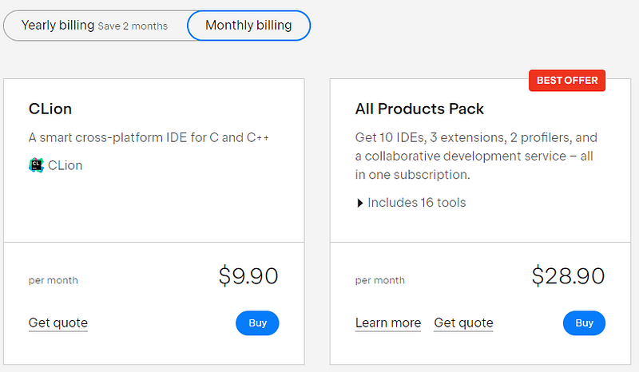And there is no difference between the $10/month version and the student/open-source ones.
#2 The second problem with this IDE is how C++ projects are often made.
Most C++ projects lock you into Visual Studio.
Visual Studio is free and frequently used for C++ projects.
The only way you will be able to use CLion for a Visual Studio project is if the project uses CMake.
CLion only works with vcpkg and CMake.
In fact vcpkg automates CMake in CLion.
The problem with Visual Studio is its usage of solution files.
When putting together a Visual Studio project most teams create a solution file:
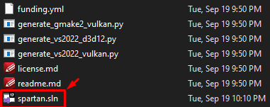Solution files automatically build a project in Visual Studio.
Due to copy right concerns CLion does not support this functionality.
For many years CLion developers have been asking for this support.
Sadly we must rewrite the build process of solution based projects using CMake for CLion.
How to install C++ dependencies
In the past Vcpkg was not supported by CLion.
You had to run Vcpkg through a command line and build it outside the IDE.
It was cumbersome.
However with more recent CLion builds Vcpkg has become a part of the IDE.
One way to view this build tool is as if it were NPM in Node or pip in Python.
Essentially that is Vcpkg.
You manage dependencies and download them from a server online.
It is not perfect in CLion yet.
You still need to fiddle with the CMake file and I will give you some hints on how to do that.
For this method you need CLion 2023.2.2+.
Create a project
To start, create a project:
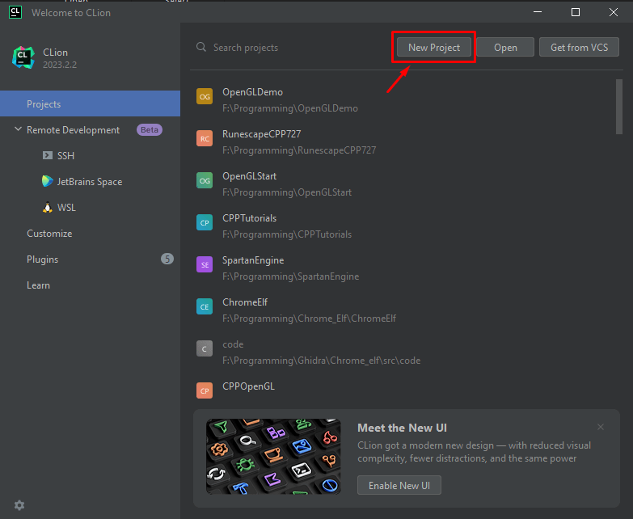Next, choose C++ executable, the language version & name the project folder and hit create on the bottom right.:

You will see a basic C++ project with CMake as its build tool:
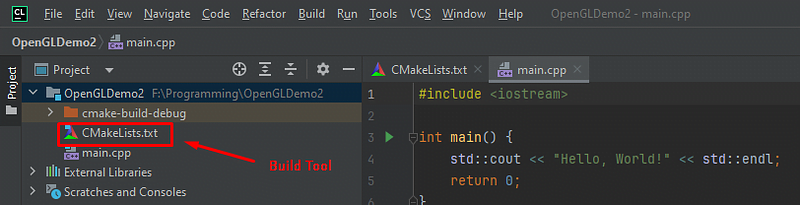If you don't know how to use CMake I recommend learning as much as you can about it as any C++ project can be made using CMake.
After reading this article you can check out a tutorial on CMake.
You must use the Visual Studio tool chain
To work with vcpkg you are locked into a Visual Studio tool chain.
Microsoft made both vcpkg & Visual Studio.
So, this is mandatory.
Let us install it...
Go to File -> Settings

Next go into Build, Execution, Deployment...

Then click on Toolchains...

Next tap on the (+) icon:
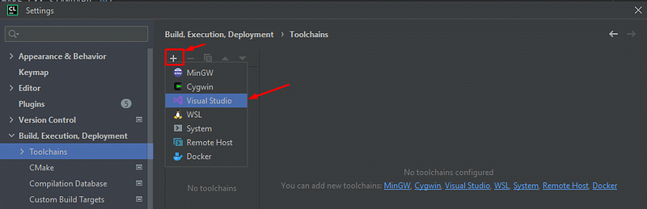And, tap Visual Studio.
Then download...

It will lead you to https://visualstudio.microsoft.com/downloads/...

Tap "free download.
Run the exe and install the "Visual Studio Installer":

Next up, exit the installer.
We are going to install build tools.
Go back to https://visualstudio.microsoft.com/downloads/ and scroll down.
Look for a search box and type in "build"...
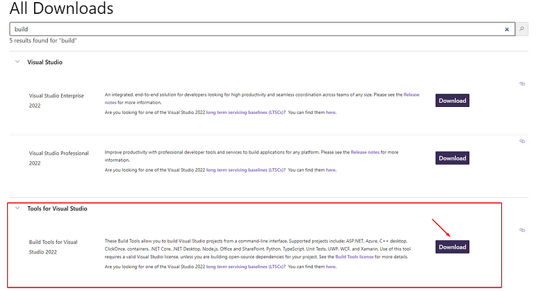Download and run that build tool exe. But make sure the installer is not running when you do so.
After running that download, this will pop up...
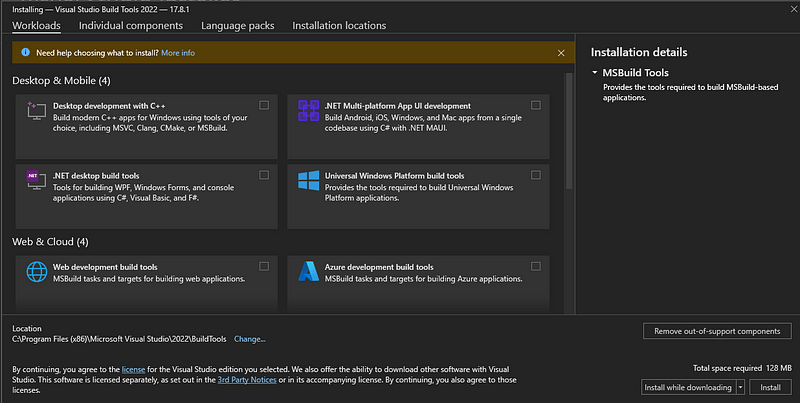Click on Desktop development and tap "install"...
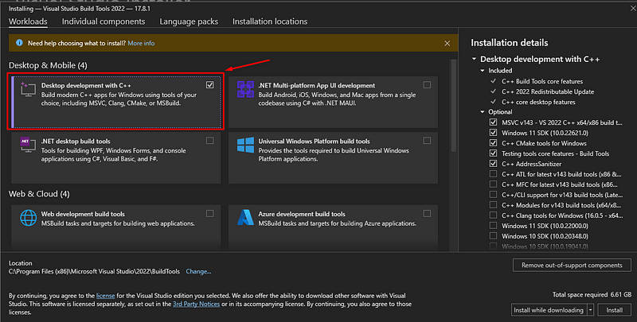Install on bottom right
You will see this...
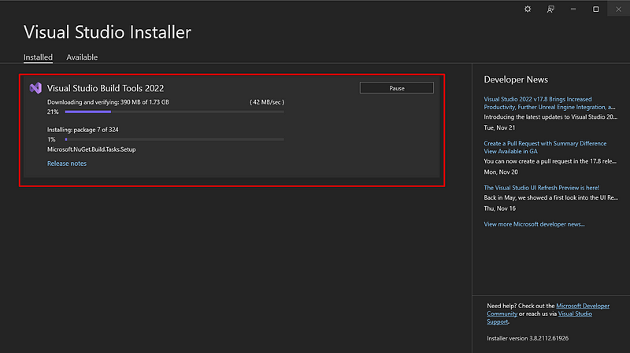Wait a while until its done.
You would have to do this anyway with Visual Studio so don't think CLion takes longer.
We are essentially using Visual Studio C++ build tools and wrapping it in CLion instead of Visual Studio IDE.
Once it is finished it should look like this:

Click "modify"

In the modify section copy and paste the path to the build tools...
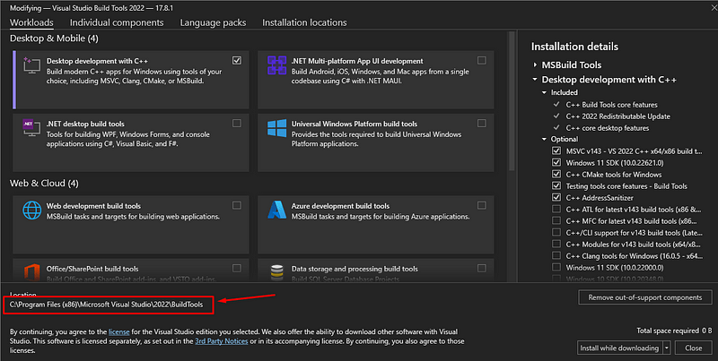Put it into CLion's tool chain path:
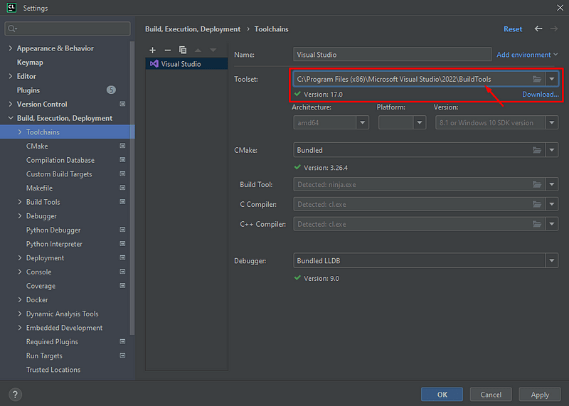Tap apply & "OK".
Vcpkg works within CLion
With this new version of CLion check out the bottom of the editor:
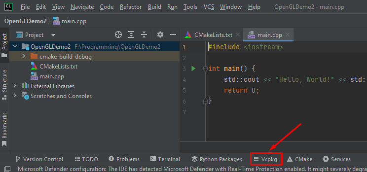Click on that and take a look...

On the left you will see Vcpkg environments.
It will be empty if this is your first time.
But, for every project you create a virtual environment that is made in Vcpkg.
It is just like other languages with Javascript's npm_modules, Python's venv or Java's library path.
Each environment is independent with its own dependencies.
So, let's create a C++ environment!
Tap the (+) sign:
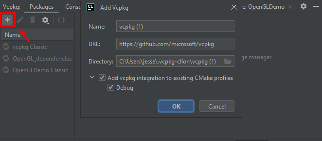Name your environment and folder:

And hit "okay".
It will build for a while just like how environments take some time in other languages.
Add your dependencies
Now lets add some example packages.
I will use OpenGL, SDL2 & GLEW as examples in this project.
I recommend following along with the dependencies I place in this article, then after you get it working you can remove them and do your own.
So, start with OpenGL:

Type "opengl" in the Vcpkg tab search.
Click the opengl library and install...

Then after it is done installing, click the add to vcpkg.json:
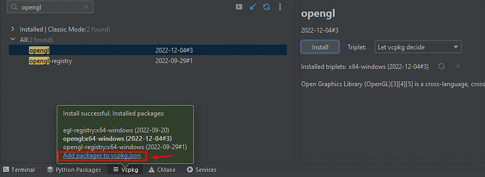If you miss that prompt just click add to vcpkg.json in the previous window:
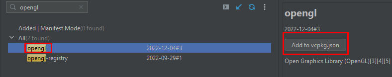Now you should see this in you project folder:
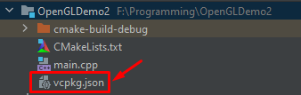That right there is like your package.json in Node or your Gradle build file in Java.
Basically it lists all the dependencies and includes it in your project:
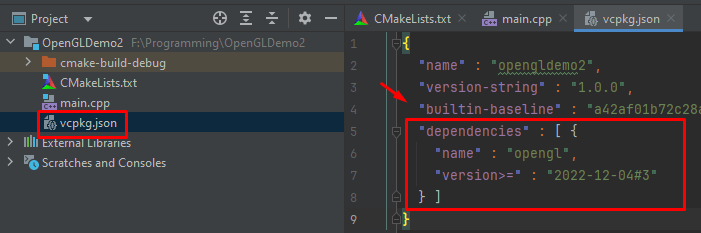The only problem with CLion right now is the disconnect from vcpkg.json and CMake.
We will address this soon but for now, add the rest of the packages...

Add Glew

Add SDL2
Make sure its inside your vcpkg.json, like this:

Run vcpkg install...
Now lets run vcpkg install, just like npm install or pip install.
"vcpkg install" installs these dependencies from your vcpkg.json into your virtual environment.
So, find where your vcpkg is located.
We can do this by going to the console inside the Vcpkg console area.
Look for "console";
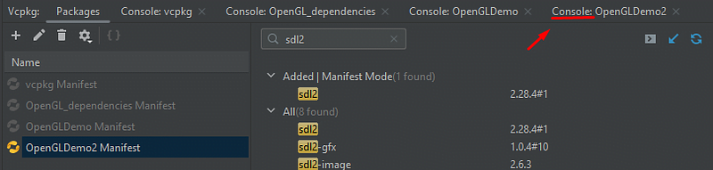Click on it.
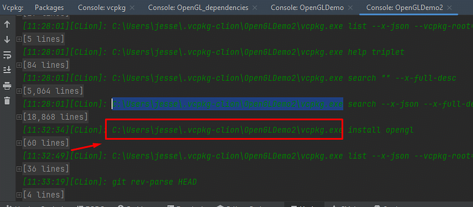You will see where CLion placed vcpkg exe. To make things simple to where you don't have to do this you can add this file to "PATH" in windows.
Otherwise just use the full directory path.
Copy and paste the exe path to the project terminal:
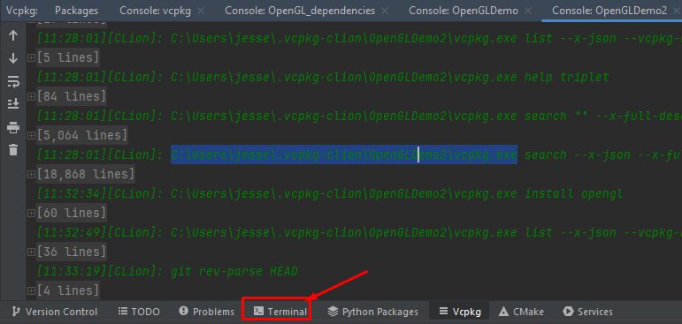Paste vcpkg.exe with "install":
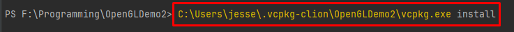It will start building for you...
Manually add the dependencies to CMake
Now in the output for this vcpkg will give you the CMake code to paste into CMakelists.txt.
Take a look:
 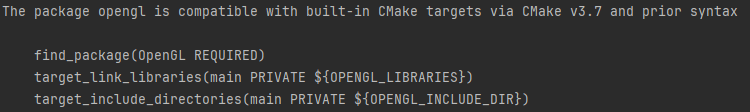
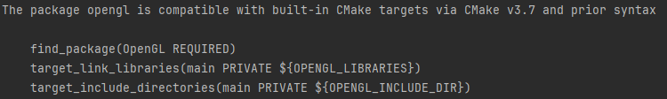
 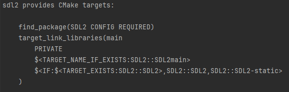
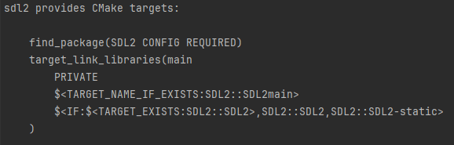
Copy & paste all of it into CMakeLists.txt like so:


And, everywhere you see "main" replace them with the project name.
It will look like this...

Now, right click go to the project explorer on the left and reload CMakeLists.txt:

You will get an include error...
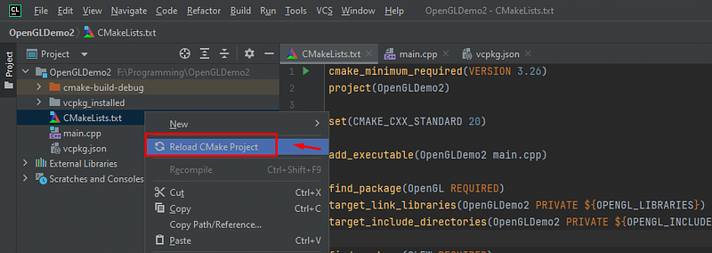At this moment CLion is not perfect. It will not give you the include paths to add to CMake.
These include paths are the actual code for the dependencies inside the virtual environment. Every time you add a dependency you have to go to your specific vcpkg environment and add the actual dependency.
Kind of redundant, I know. But, I am sure this will be updated in the future.
Add the includes...
Now lets go back to the path where the vcpkg path was in console...

Go to the actual directory:
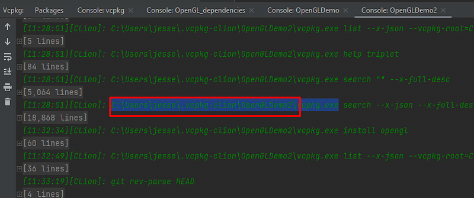And go into packages...
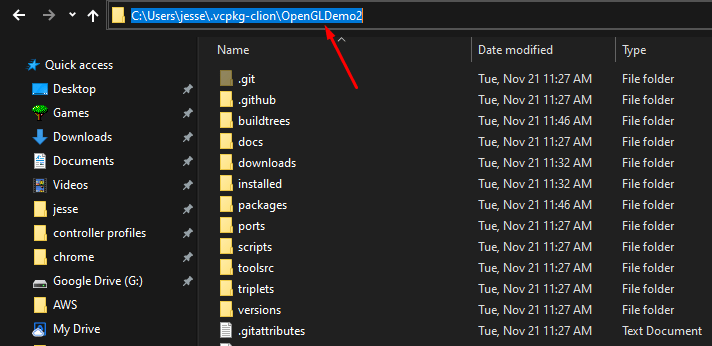You will see all the includes you potentially need.
Any time you get include errors just add them as a "HINT".
CMake will automatically configure the dependency paths based on those folders.
Here take a look:
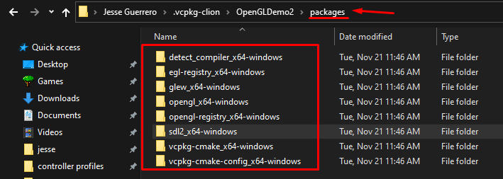And that is it!
Remember, you have to add hints for every dependency but this is the general workflow for building projects.
Delete the build and run
Sometimes you may have to delete the build folder then re-build and run when adding dependencies:

Delete the build and run.
Your project will work and you will be able to create OpenGL projects in CLion.
Example code
You can run this example code in this OpenGL project to verify it worked. It is a Hello Triangle.
https://gist.github.com/JesseGuerrero/d35c2fce8c0d84fb824a2026ed320d98
A final tip: Use an LLM to help you debug your CMake scripts
LLMs are very good at building and debugging CMake scripts.
CMake is an old and fully documented build tool.
Often I just need to copy the CMakeLists.txt file content into my LLM and ask it questions.
It corrects my file most of the time or gives me very valuable information about it.
Anywho, I hope you learned something...
Happy coding!
Resources
CMake tutorial: https://youtu.be/mKZ-i-UfGgQ?si=hUxgKPQTk3ypBk7Z
Visual Studio downloads: https://visualstudio.microsoft.com/downloads/
Vcpkg website: https://vcpkg.io/